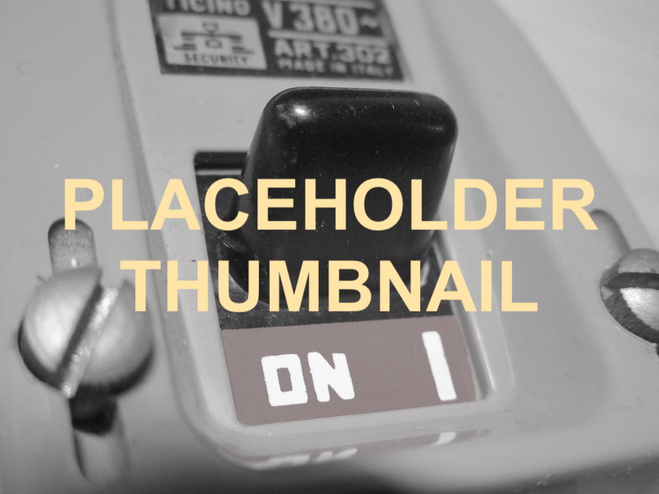

Vintage Italian fuse and breaker panels
Here's the thing: Italy didn't have fuse panels, at least not in the same way as other countries did.
Now, it's not like Italy didn't have fuses at all of course, the thing is, we didn't have something ready-made like
the Wylex fuse boxes in the UK and the Edison screw fuse panels in the US.
What people did was they bought separate fuse holders, that handled just one circuit, and mounted them to a board
or some kind of electrical enclosure.
Fuse panels
Fuse panel with BTicino fuses
This fusebox was made by taking an ordinary electrical enclosure and mounting two BTicino fuse holders on it.
Other types of fuses
Early fuse holders were, as you might imagine, made out of ceramic or bakelite. Rewireable fuses seemed to be very
common, though cartridge fuses were also available at that time.
Later on BTicino fuse holders - either the cartridge type or the rewireable type - were very common, and they
can still be found today in some older homes.
Breakers
The earliest breakers to become popular were the Zeus-Rapizzi type. Being so early, they were initally not common in normal houses, instead being used in commercial applications or, apparently, as limiters for power companies. The Zeus breakers had a fairly modern appearance, since they had a normal switch to turn the power on or off instead of using push-buttons like some other examples.
Later on BTicino started producing breakers too - BTicino breakers were very popular in the 60s, and there were
various types of them: some mounted on a board like normal fuse holders, but there was another type that was
wall-mounted and came with two breakers, depending on the configuration.
From my understanding this was the first breaker panel to become popular, however it wasn't modular: you could
buy various configurations of it (apparently one of the configurations came with a built-in doorbell transformer),
but you couldn't add other breakers after the fact.
One way of building modular panels was with a system made by Ave. This system consisted of various modules that could be connected together to form a single panel. This might seem like the same thing as a modern panel, but from the looks of it modules couldn't be added afterwards since it seems like this system was meant to be mounted inside the wall.
The earliest "real" breaker panel that I could find a pic of is the "TIMATIC" line from BTicino, which was
briefly described in an electrical book from the 60s I have.
Thing is, if you go online and search for it, you'll find zero results. However, I've seen some eBay listings
of breakers that looked a LOT like the ones in that picture, except they were branded as "MagiTik"...
but I've never managed to see a picture of a breaker panel like the one in that book.
Being that there's literally 0 info about this line online, I can't imagine that it was all that popular.
So, this means that the earliest modular, modern-style type of breaker panel that I've seen online is the BTicino Tiker system. This was basically an Italian DIN rail: you had various modules that you could connect in a box, and you could get boxes of various sizes depending on your needs.